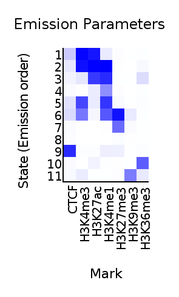
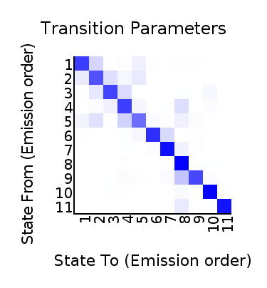
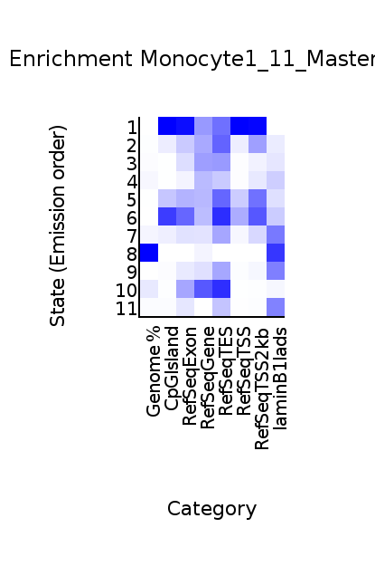
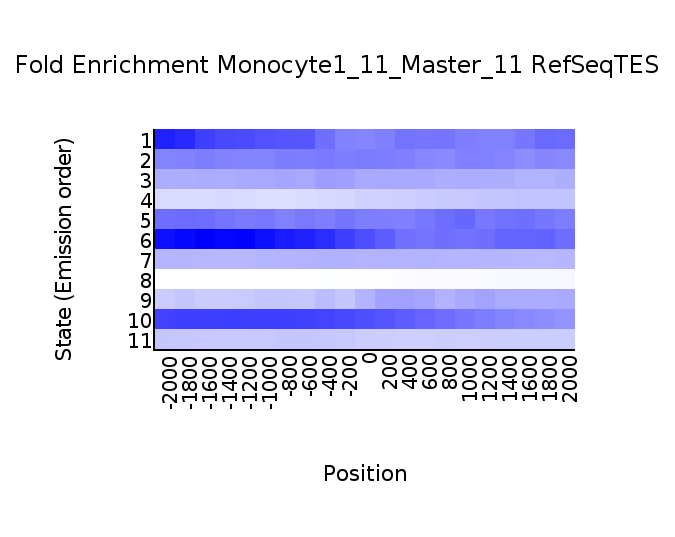
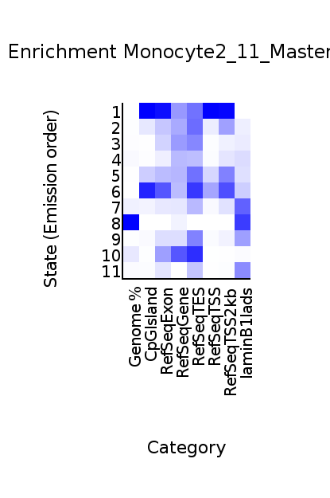
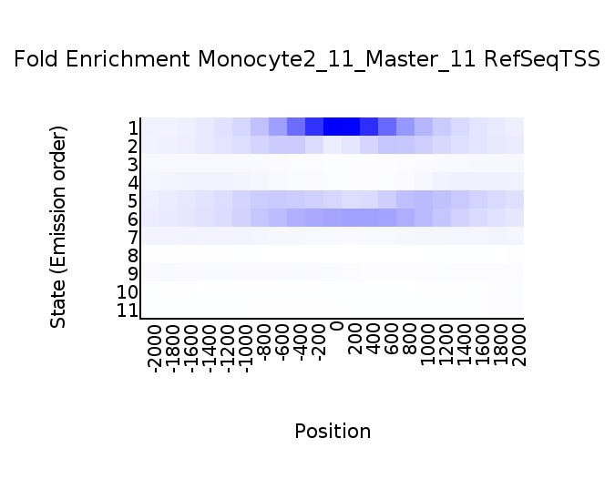
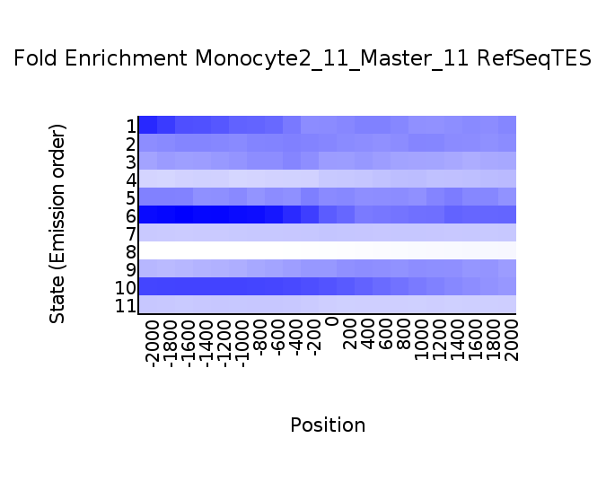

<center><h1>ChromHMM Report</h1></center>
Input Directory: /home/ecarrillo/Downloads/MAster_ChromHMM/RESULTS/binary<br>
Output Directory: /home/ecarrillo/Downloads/MAster_ChromHMM/RESULTS/Modelo_11_estados<br>
Number of States: 11<br>
Assembly: hg19<br>
Full ChromHMM command: LearnModel -i Master_11 -l /home/ecarrillo/.lib/ChromHMM_v1.11/CHROMSIZES/hg19.txt -printposterior -printstatebyline /home/ecarrillo/Downloads/MAster_ChromHMM/RESULTS/binary /home/ecarrillo/Downloads/MAster_ChromHMM/RESULTS/Modelo_11_estados 11 hg19
<h1>Model Parameters</h1>
<br>
<li><a href="emissions_11_Master_11.svg">Emission Parameter SVG File</a><br>
<li><a href="emissions_11_Master_11.txt">Emission Parameter Tab-Delimited Text File</a><br>
<br>
<li><a href="transitions_11_Master_11.svg">Transition Parameter SVG File</a><br>
<li><a href="transitions_11_Master_11.txt">Transition Parameter Tab-Delimited Text File</a><br><br>
<li><a href="model_11_Master_11.txt">All Model Parameters Tab-Delimited Text File</a> <br>
<h1>Genome Segmentation Files</h1>
<li><a href="Monocyte1_11_Master_11_segments.bed">Monocyte1_11_Master_11 Segmentation File (Four Column Bed File)</a><br>
<li><a href="Monocyte2_11_Master_11_segments.bed">Monocyte2_11_Master_11 Segmentation File (Four Column Bed File)</a><br>
<li><a href="STATEBYLINE"> Directory of Maximum States Assignments Line By Line</a><br>
<li><a href="POSTERIOR"> Directory of Posterior Files</a><br>
<br>
Custom Tracks for loading into the <a href="http://genome.ucsc.edu">UCSC Genome Browser</a>:<br>
<li><a href=Monocyte1_11_Master_11_dense.bed>Monocyte1_11_Master_11 Browser Custom Track Dense File</a> <br>
<li><a href=Monocyte1_11_Master_11_expanded.bed>Monocyte1_11_Master_11 Browser Custom Track Expanded File</a><br>
<li><a href=Monocyte2_11_Master_11_dense.bed>Monocyte2_11_Master_11 Browser Custom Track Dense File</a> <br>
<li><a href=Monocyte2_11_Master_11_expanded.bed>Monocyte2_11_Master_11 Browser Custom Track Expanded File</a><br>
<h1>State Enrichments</h1>
<h2>Monocyte1_11_Master_11 Enrichments</h2>
 <br>
<li><a href="Monocyte1_11_Master_11_overlap.svg">Monocyte1_11_Master_11 Overlap Enrichment SVG File</a><br>
<li><a href="Monocyte1_11_Master_11_overlap.txt">Monocyte1_11_Master_11 Overlap Enrichment Tab-Delimited Text File</a><br>
 <br>
<li><a href="Monocyte1_11_Master_11_RefSeqTSS_neighborhood.svg">Monocyte1_11_Master_11_RefSeqTSS_neighborhood Enrichment SVG File</a><br>
<li><a href="Monocyte1_11_Master_11_RefSeqTSS_neighborhood.txt">Monocyte1_11_Master_11_RefSeqTSS_neighborhood Enrichment Tab-Delimited Text File</a><br>
 <br>
<li><a href="Monocyte1_11_Master_11_RefSeqTES_neighborhood.svg">Monocyte1_11_Master_11_RefSeqTES_neighborhood Enrichment SVG File</a><br>
<li><a href="Monocyte1_11_Master_11_RefSeqTES_neighborhood.txt">Monocyte1_11_Master_11_RefSeqTES_neighborhood Enrichment Tab-Delimited Text File</a><br>
<h2>Monocyte2_11_Master_11 Enrichments</h2>
 <br>
<li><a href="Monocyte2_11_Master_11_overlap.svg">Monocyte2_11_Master_11 Overlap Enrichment SVG File</a><br>
<li><a href="Monocyte2_11_Master_11_overlap.txt">Monocyte2_11_Master_11 Overlap Enrichment Tab-Delimited Text File</a><br>
 <br>
<li><a href="Monocyte2_11_Master_11_RefSeqTSS_neighborhood.svg">Monocyte2_11_Master_11_RefSeqTSS_neighborhood Enrichment SVG File</a><br>
<li><a href="Monocyte2_11_Master_11_RefSeqTSS_neighborhood.txt">Monocyte2_11_Master_11_RefSeqTSS_neighborhood Enrichment Tab-Delimited Text File</a><br>
 <br>
<li><a href="Monocyte2_11_Master_11_RefSeqTES_neighborhood.svg">Monocyte2_11_Master_11_RefSeqTES_neighborhood Enrichment SVG File</a><br>
<li><a href="Monocyte2_11_Master_11_RefSeqTES_neighborhood.txt">Monocyte2_11_Master_11_RefSeqTES_neighborhood Enrichment Tab-Delimited Text File</a><br>
